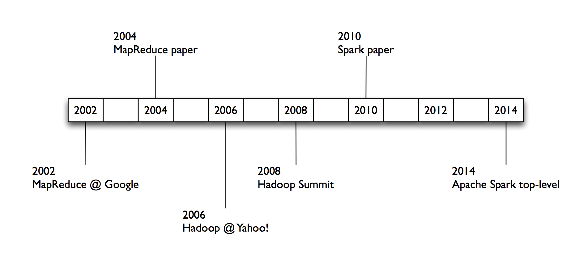
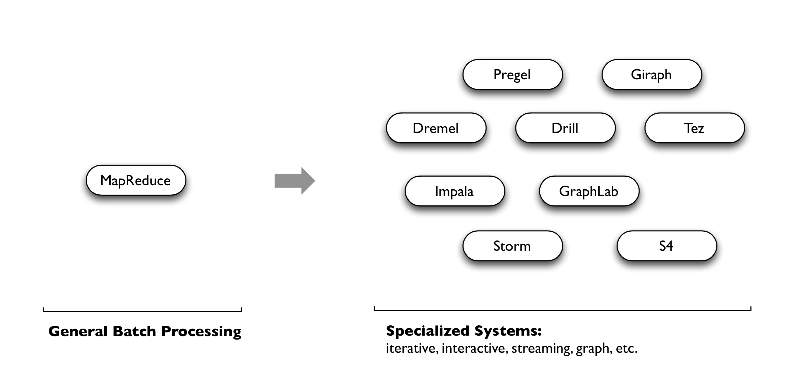

Apache Spark
By Josh Fermin
What is Apache Spark?
Open source data analytics cluster computing framework
Real-Time vs Interactive vs Batch processing
Write apps in Java, Scala or Python.
Map Reduce is only a part of supported capabilities.
History
History - Map Reduce
Two major problems:
- difficulty programming in Map Reduce
- Batch style jobs not fitting all use cases
History - Workarounds
Spark - Goals
Generalize Map Reduce
- fast data sharing
- general DAGs (Directed Acyclic Graphs)
Learning Spark API
Problem: Count how many lines a word shows up in a document
Spark Shell - Scala
Spark Download here (use prebuilt version)./bin/spark-shell/./bin/pyspark/Spark Context
scala> val textFile = sc.textFile("README.md")
textFile: spark.RDD[String] = spark.MappedRDD@2ee9b6e3- Start spark context
- Creates RDD (Resilient Distributed Dataset)
RDDs
- Spark's primary abstraction
- Distributed collection of items
- Can be stored in the volatile memory or in a persistent storage
RDDs

- Reading and writing happens too often for each Map Reduce (MR)
RDDs

- Transformations from one to another are through memory and doesn't touch the disk (except for RDD2)
- When the memory runs out, it is usually moved over to persistent storage.
RDD Transformations
val linesWithSpark = textFile.filter(line => line.contains("Spark"))
linesWithSpark: spark.RDD[String] = spark.FilteredRDD@7dd4af09
Caching
Cluster-wide in-memory cache
Useful for when data is accessed repeatedly (i.e. iterative algorithms or re-querying a small dataset)
Caching Example
scala> linesWithSpark.cache()
res7: spark.RDD[String] = spark.FilteredRDD@17e51082
scala> linesWithSpark.count()
res8: Long = 15Where to go from here
- Spark Programming Gudie
- Deployment overview
- Spark Examples
Who uses spark?
- SK Telecom - Analyze mobile usage patterns
- Freeman Lab - analyzing/visualizing patterns in large scale recordings of brain acitivty
- Yandex - Using spark to process islands identified from a search robot